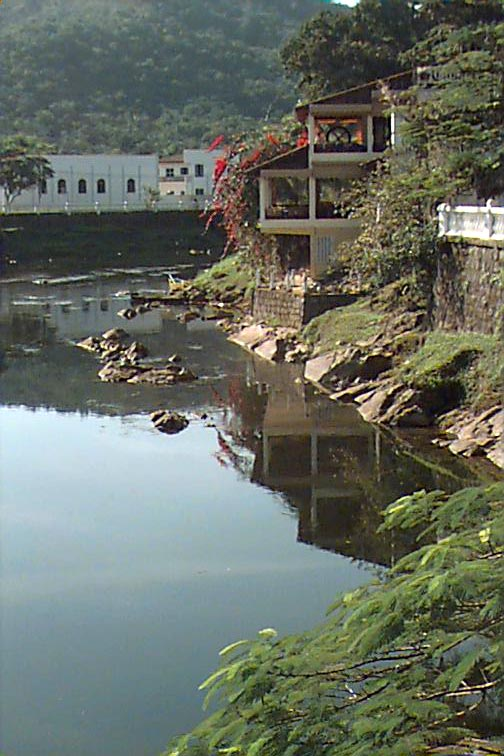
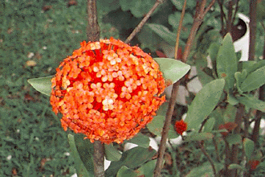
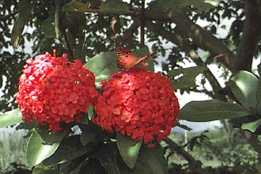

(Rio Nhundiaquara - Morretes-PR)
VIDA - II
Vida... tênue vibração
Num conjunto de elementos
De frágil composição,
Envolvendo todos o sentimentos.
Ideal apaixonante,
De por todos uma busca incessante.
Na juventude é uma verdade constante,
Onde tudo é extremamente vibrante!
De todas as paixões dos amantes,
Da exigência de todos os arrogantes,
Não há nada mais excruciante
Do que o esvair de uma vida pulsante!
De uma dor infinda,
Ao se interromper uma vida querida,
A dor é forte e aberta fica a ferida,
E nem a própria vida é sentida!
Por nenhum momento
Se nos passa pelo pensamento
Qualquer espécie de alento
A não ser ter de volta o que agora é do vento!
A esperança do retorno
Sai da nossa mão...
Ficando somente na memória o contorno
Daquilo que formamos intensamente no coração!
Mas, para nossa alegria,
Por alguém fomos criados...
O que fomos um dia,
Ali estará sempre registrado!
E para a nossa benesse...
Eliminando a dor e fechando a ferida,
Como numa suave prece...
Seremos feitos novos... voltaremos á Vida!

Ser "E" Não Ser
Você pode ser firme como uma pedra,
Mas não pode ser duro como ela.
Você pode ser quente e caloroso como o fogo,
Mas não pode ser destrutivo e sufocante como ele.
Você pode ser límpido e refrescante como a água,
Mas não pode ser mole como ela.
Você pode ser saudável e vivificante como o ar,
Mas não pode ser violento e devastador como a tempestade.
Mesmo da dureza da pedra, as vezes temos que ser;
Mesmo da destruição do fogo, as vezes usamos;
Mesmo da qualidade mole da água nos fazemos;
Mesmo da violência da tempestade nos transformamos.
Mas... muitas vezes é melhor
Ser como o espelho que reflete,
Ser como o vidro que transparece
Ser como a fumaça que desvanece.

VIVAVIDA!
Você vê e vive
Aquele momento
Que para muitos,
Em busca do sustento,
Passa rápido como o vento,
Diante dos seus olhos sonolentos?
Sem ter muita escolha,
Não vêem as gotas
Da chuva nas lagoas
Formarem frágeis bolhas;
Nem das flores
Enxergam suas formas ou cores,
E o prazer de sentir seus odores.
Atrapalhados com seus dissabores,
Viajam no tempo e no espaço,
Sem sentir ou querer dar
Um simples abraço!
A vida toda
Procuram chegar,
Sem sair do lugar...!
Como pode alguém
Vir a conhecer algo,
Sem vivenciar
E observar...
E meditar...
E amar...!?
Poesia extraída do livro
"Risos e Lágrimas", de Felipe Nicolau, edição 1.999
As flores foram fotografadas no jardim da casa da mãe do autor.
Adquira o livro: felipenicolau@felipenicolau.com.br
|
VOLTAR | LIVRO 1 | LIVRO
2 |